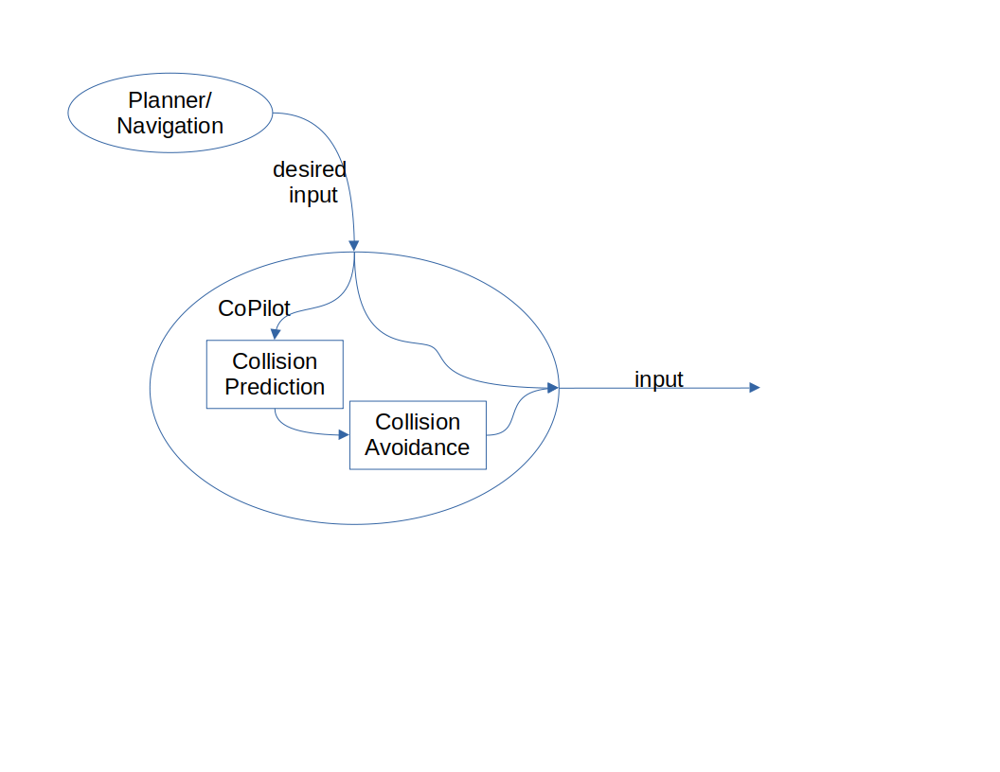

The 3Laws Copilot is based on Control Barrier Functions as described in "Backup Control Barrier Functions: Formultation and Comparative Study, Yuxiao Chen , Mrdjan Jankovic , Mario Santillo , and Aaron D. Ames, arXiv:2104.11332v1 [eess.SY] 22 Apr 2021", and "Applied Safety Critical Control, Thomas Gurriet, Doctor of Philosophy, CALIFORNIA INSTITUTE OF TECHNOLOGY, Pasadena, California 2020"
The basic concept is to use the current state of a dynamical system (robot arm, mobile device, aircraft, marine vessel, etc.) to drive a model of that system. Inputs including locations, geometries, speeds, and accelerations of obstacles are also needed when the CoPilot is designed for collision avoidance. A prediction of when a collision will occur is used as a basis to modify the currently requested steering/speed/attitude commands when necessary. The CoPilot uses an alternative planning/control strategy to prevent the collision by slowing or diverting the device away from the collision path. The alternative control strategy is built into the CoPilot by 3Laws based on the objective for the particular deployment.
From an operational standpoint, the CoPilot (when used for collision avoidance) sits between the planning layer and the hardware control layer. "Hardware control" typically refers to a speed or attitude controller for a vehicle or a joint attitude/speed controller for an articulated robot.

The CoPilot will evaluate the likelihood of a collision and will only modify the desired input from the planner when a collision is predicted within the estimation window.
| Description | Video |
|---|---|
| CoPilot stops a truck based on perceiving the vehicle in the next lane. | |
| An articulated robot collides with environmental equipment that is not placed correctly until CoPilot modifies the joint-angle planner to avoid the collisions. | |
| A quadruped is programmed to go towards an objective, but there are obstacles in the way. CoPilot guides the robot around the obstacles. | |
| A human is directing a racing drone flying at 100kph to violate a geofence barrier, but CoPilot enforces the geofence. | |
| CoPilot is designed in this case to sit between the controller and the hardware. Its goal is both to prevent collisions but also to keep the robot upright. Without CoPilot, a strong disturbance causes the robot to fall over. With CoPilot, the robot remains upright and avoids colliding with objects. |